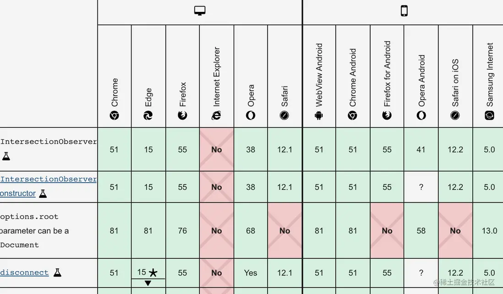
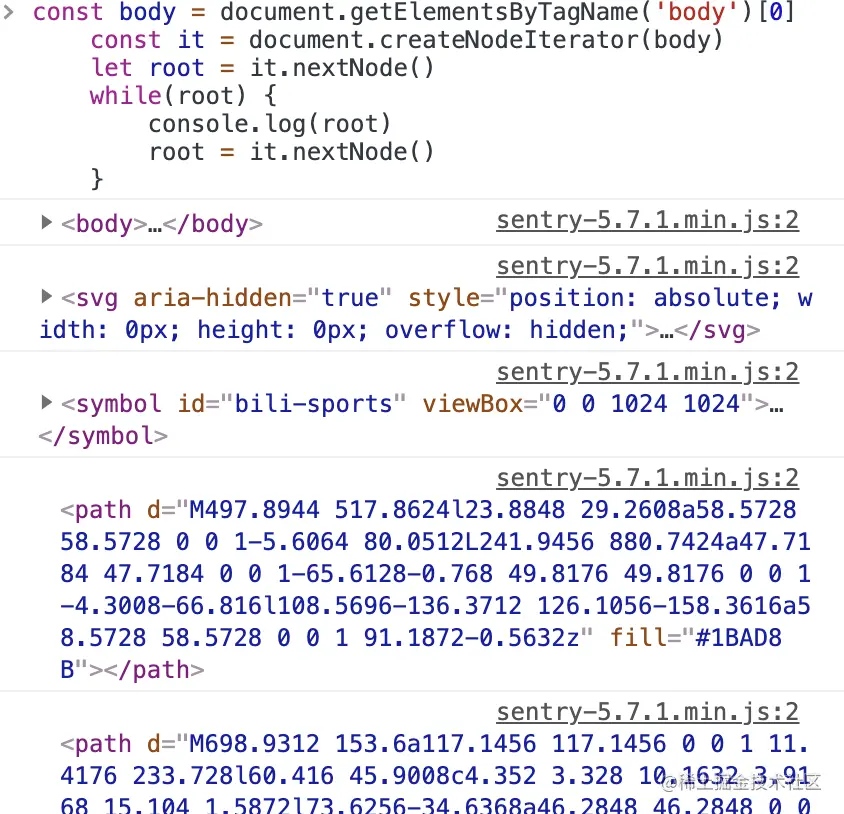
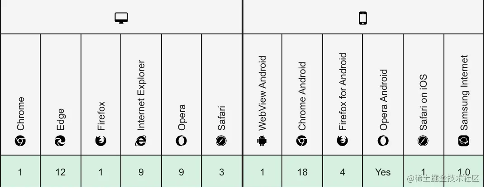
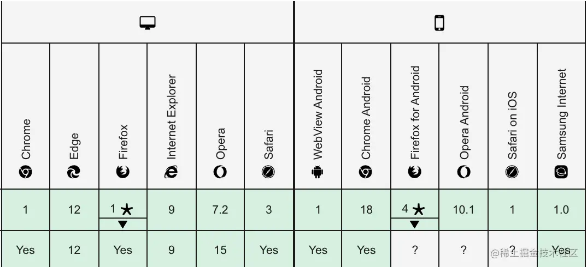
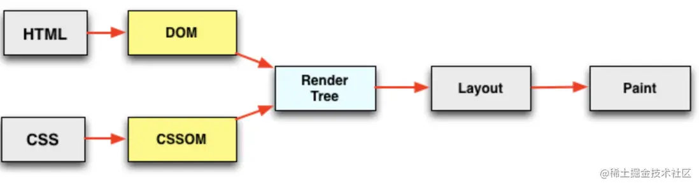
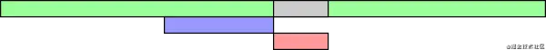
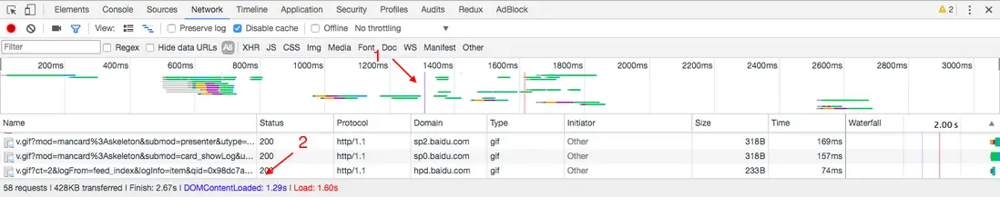
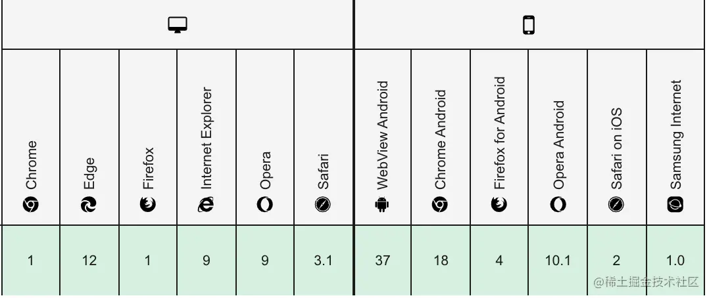
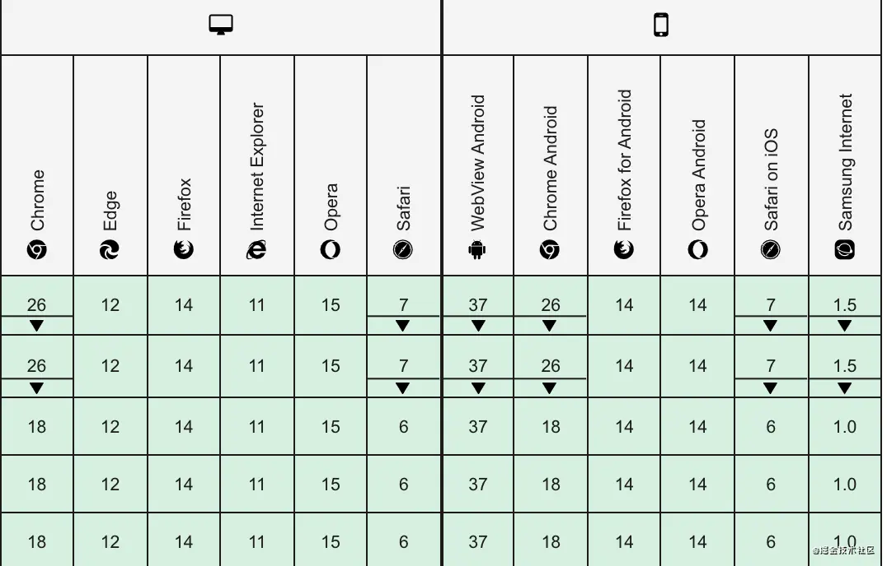

50个JS高级知识点
知识点
1、undeclared 与 undefined 的区别？
- undefined：声明了变量，但是没有赋值
- undeclared：没有声明变量就直接使用
var a; //undefined
b; // b is not defined
2、let & const 与 var 的区别？
- var 存在变量提升，可重复声明同一变量，声明的变量均可改
- let 没有变量提升，不可重复声明同一变量，声明的变量均可改
- const 没有变量提升，不可重复声明同一变量，声明的基本数据类型不可改，引用类型可改属性，不可只声明变量而不赋值
3、暂时性死区问题
var a = 100;
if (1) {
a = 10;
//在当前块作用域中存在a使用let/const声明的情况下，给a赋值10时，只会在当前作用域找变量a，
// 而这时，还未到声明时候，所以控制台Error:a is not defined
let a = 1;
}
4、获取 DOM 元素有哪些方法
| 方法 | 描述 | 返回类型 |
|---|---|---|
| document.getElementById(id) | 通过 id 获取 dom | 符合条件的 dom 对象 |
| document.getElementsByTagName(tagName) | 通过标签名获取 dom | 符合条件的所有 dom 对象组成的类数组 |
| document.getElementsByClassName(class) | 通过 class 获取 dom | 符合条件的所有 dom 对象组成的类数组 |
| document.getElementsByName(name) | 通过标签的属性 name 获取 dom | 符合条件的所有 dom 对象组成的类数组 |
| document.querySelector(选择器) | 通过选择器获取 dom | 符合条件的第一个 dom 对象 |
| document.querySelectorAll(选择器) | 通过选择器获取 dom | 符合条件的所有 dom 对象组成的类数组 |
5、操作 DOM 元素有哪些方法
| 标题 | 描述 |
|---|---|
| createElement | 创建一个标签节点 |
| createTextNode | 创建一个文本节点 |
| cloneNode(deep) | 复制一个节点，连同属性与值都复制，deep 为 true 时，连同后代节点一起复制，不传或者传 false，则只复制当前节点 |
| createDocumentFragment | 创建一个文档碎片节点 |
| appendChild | 追加子元素 |
| insertBefore | 将元素插入前面 |
| removeChild | 删除子元素 |
| replaceChild | 替换子元素 |
| getAttribute | 获取节点的属性 |
| createAttribute | 创建属性 |
| setAttribute | 设置节点属性 |
| romoveAttribute | 删除节点属性 |
| element.attributes | 将属性生成类数组对象 |
6、DOM 的类型有哪几种？
12 种
元素节点 Node.ELEMENT_NODE(1)
属性节点 Node.ATTRIBUTE_NODE(2)
文本节点 Node.TEXT_NODE(3)
CDATA 节点 Node.CDATA_SECTION_NODE(4)
实体引用名称节点 Node.ENTRY_REFERENCE_NODE(5)
实体名称节点 Node.ENTITY_NODE(6)
处理指令节点 Node.PROCESSING_INSTRUCTION_NODE(7)
注释节点 Node.COMMENT_NODE(8)
文档节点 Node.DOCUMENT_NODE(9)
文档类型节点 Node.DOCUMENT_TYPE_NODE(10)
文档片段节点 Node.DOCUMENT_FRAGMENT_NODE(11)
DTD 声明节点 Node.NOTATION_NODE(12)
7、JS 的作用域及作用域链
什么是作用域呢？
在 Javascript 中，作用域分为 全局作用域 和 函数作用域
-
全局作用域：代码在程序任何地方都能访问，window 对象的内置属性都属于全局作用域
-
函数作用域：在固定的代码片段才能被访问
作用域有上下级关系，上下级关系的确定就看函数是在哪个作用域下创建的。如上，fn 作用域下创建了 bar 函数，那么“fn 作用域”就是“bar 作用域”的上级。
作用域最大的用处就是隔离变量，不同作用域下同名变量不会有冲突。
什么是作用域链？
一般情况下，变量取值到 创建 这个变量 的函数的作用域中取值
但是如果在当前作用域中没有查到值，就会向上级作用域去查，直到查到全局作用域，这么一个查找过程形成的链条就叫做作用域链
var x = 10;
function fn() {
console.log(x);
}
function show(f) {
var x = 20;
f(); // 10
}
show(fn);
8、数组的 splice 与 slice 的区别？
| 方法 | 参数 | 描述 |
|---|---|---|
| splice | splice(start, num, item1, item2, …) | 从 start 索引开始，截取 num 个元素，并插入 item1、item2 到原数组里，影响原数组 |
| slice | slice(start, end) | 从 start 开始，截取到 end - 1，如果没有 end，则截取到左后一个元素，不影响原数组 |
9、substr 和 substring 的区别？
| 方法 | 参数 | 描述 |
|---|---|---|
| substr | substr(start,length) | 返回从 start 位置开始 length 长度的子串 |
| substring | substring(start,end) | 返回从 start 位置开始到 end 位置的子串（不包含 end） |
10、includes 比 indexOf 好在哪？
includes 可以检测 NaN ，indexOf 不能检测 NaN ，includes 内部使用了 Number.isNaN 对 NaN 进行了匹配
11、下面代码输出的结果？
for (var i = 0; i < 3; i++) {
setTimeout(function () {
console.log(i);
}, 0);
}
答案：3，3，3
解决方法
for (let i = 0; i < 3; i++) {
setTimeout(function () {
console.log(i);
}, 0);
}
// 0 1 2
for (var i = 0; i < 3; i++) {
(function (i) {
setTimeout(
function () {
console.log(i);
},
0,
i
);
})(i);
}
// 0 1 2
12、什么是 Promise？解决了什么问题？
有什么用呢？
- 1、解决回调地狱问题
- 2、代码可读性提高
- 3、你可以信任 Promise，它的状态只会改变一次并且不可逆
推荐阅读
-
是什么：推荐阮一峰大佬的文章Promise 对象
-
原理：推荐我这篇手写 Promise 原理，最通俗易懂的版本！！！【阅读：1.2w，点赞：466】
13、什么是 async/await？解决了什么问题？
对于 async/await，我总结为一句话async/await 是 generator + Promise 的语法糖，它用同步方式执行异步代码
推荐阅读
-
async/await 的用法：阮一峰大佬的文章async 和 await
-
async/await 的原理：推荐我的这篇7 张图，20 分钟就能搞定的 async/await 原理！为什么要拖那么久？【阅读：2.1w，点赞：630】
14、常用的正则表达式有哪些？
看我这篇文章有了这 25 个正则表达式，代码效率提高 80%【阅读：1.6w 点赞：830】
15、JS 延迟加载的方法有哪些？
-
1、
<script async src="script.js"></script>：给 script 标签加 async 属性，则加载和渲染后续文档元素的过程将和script.js的加载与执行并行进行（异步） -
2、
<script defer src="script.js"></script>：给 script 标签加 defer 属性，加载后续文档元素的过程将和script.js的加载并行进行（异步），但是script.js的执行要在所有元素解析完成之后，DOMContentLoaded事件触发之前完成 -
3、动态创建 script 标签：等到
DOMContentLoaded事件触发时，生成一个 script 标签，渲染到页面上上 -
4、setTimeout 定时器延迟代码执行
16、new 操作符为什么能创建一个实例对象？
分析一下 new 的整个过程：
-
1、创建一个空对象
-
2、继承构造函数的原型
-
3、this 指向 obj，并调用构造函数
-
4、返回对象
简单实现一下 new：
function myNew(fn, ...args) {
// 第一步：创建一个空对象
const obj = {};
// 第二步：继承构造函数的原型
obj.__proto__ = fn.prototype;
// 第三步：this指向obj，并调用构造函数
fn.apply(obj, args);
// 第四步：返回对象
return obj;
}
17、什么是文档碎片？
-
是什么：一个容器，用于暂时存放创建的 dom 元素，使用
document.createDocumentFragment()创建 -
有什么用：将需要添加的大量元素 先添加到文档碎片 中，再将文档碎片添加到需要插入的位置，大大减少 dom 操作，提高性能
例子
var oFragmeng = document.createDocumentFragment();
for (var i = 0; i < 10000; i++) {
var op = document.createElement("span");
var oText = document.createTextNode(i);
op.appendChild(oText);
//先附加在文档碎片中
oFragmeng.appendChild(op);
}
//最后一次性添加到document中
document.body.appendChild(oFragmeng);
18、async/await 如何检测报错？
推荐这篇async await 更优雅的错误处理【阅读量：1.5w，点赞：210】
19、宏任务与微任务有哪些？
宏任务
| # | 浏览器 | Node |
|---|---|---|
| I/O | ✅ | ✅ |
| setTimeout | ✅ | ✅ |
| setInterval | ✅ | ✅ |
| setImmediate | ❌ | ✅ |
| requestAnimationFrame | ✅ | ❌ |
微任务
| # | 浏览器 | Node |
|---|---|---|
| Promise.prototype.then catch finally | ✅ | ✅ |
| process.nextTick | ❌ | ✅ |
| MutationObserver | ✅ | ❌ |
20、宏任务与微任务的执行顺序？说说 EventLoop？
看看我这篇setTimeout+Promise+Async 输出顺序？很简单呀！
21、Object.defineProperty(target, key, options)，options 可传什么参数？
-
value：给 target[key]设置初始值
-
get：调用 target[key]时触发
-
set：设置 target[key]时触发
-
writable：规定 target[key]是否可被重写，默认 false
-
enumerable：规定了 key 是否会出现在 target 的枚举属性中，默认为 false
-
configurable：规定了能否改变 options，以及删除 key 属性，默认 false，具体详细请看Object.defineProperty 函数的 configurable 配置
22、什么是防抖？什么是节流？
| 操作 | 描述 | 场景 |
|---|---|---|
| 防抖 | 频繁去触发一个事件，但是只触发最后一次。以最后一次为准 | 1、电脑息屏时间，每动一次电脑又重新计算时间 2、input 框变化频繁触发事件可加防抖 3、频繁点击按钮提交表单可加防抖 |
| 节流 | 频繁去触发一个事件，但是只能每隔一段时间触发一次 | 1、滚动频繁请求列表可加节流 2、游戏里长按鼠标，但是动作都是每隔一段时间做一次 |
23、什么是高阶函数？简单实现一个？
高阶函数：英文叫 Higher-order function。JavaScript 的函数其实都指向某个变量。既然变量可以指向函数，函数的参数能接收变量，那么一个函数就可以接收另一个函数作为参数，这种函数就称之为高阶函数。
// 简单的高阶函数
function add(x, y, f) {
return f(x) + f(y);
}
//用代码验证一下：
add(-5, 6, Math.abs); // 11
像数组的 map、reduce、filter 这些都是高阶函数
24、什么是函数柯里化？简单实现一个？
柯里化，英语：Currying(果然是满满的英译中的既视感)，是把接受多个参数的函数变换成接受一个单一参数（最初函数的第一个参数）的函数，并且返回接受余下的参数而且返回结果的新函数的技术。
// 普通的add函数
function add(x, y) {
return x + y;
}
// Currying后
function curryingAdd(x) {
return function (y) {
return x + y;
};
}
add(1, 2); // 3
curryingAdd(1)(2); // 3
好处
- 参数复用
// 正常正则验证字符串 reg.test(txt)
// 普通情况
function check(reg, txt) {
return reg.test(txt);
}
check(/\d+/g, "test"); //false
check(/[a-z]+/g, "test"); //true
// Currying后
function curryingCheck(reg) {
return function (txt) {
return reg.test(txt);
};
}
var hasNumber = curryingCheck(/\d+/g);
var hasLetter = curryingCheck(/[a-z]+/g);
hasNumber("test1"); // true
hasNumber("testtest"); // false
hasLetter("21212"); // false
- 延迟执行
其实 Function.prototype.bind 就是科里化的实现例子
function sayKey(key) {
console.log(this[key]);
}
const person = {
name: "Sunshine_Lin",
age: 23,
};
// call不是科里化
sayKey.call(person, "name"); // 立即输出 Sunshine_Lin
sayKey.call(person, "age"); // 立即输出 23
// bind是科里化
const say = sayKey.bind(person); // 不执行
// 想执行再执行
say("name"); // Sunshine_Lin
say("age"); // 23
25、什么是 compose？简单实现一个？
简单的 compose 函数
const compose = (a, b) => (c) => a(b(c));
例子：统计单词个数
// 普通写法
console.log(len(space("i am linsanxin"))); // 3
console.log(len(space("i am 23 year old"))); // 6
console.log(len(space("i am a author in juejin"))); // 7
// compose写法
const compose =
(...fn) =>
(value) => {
return fn.reduce((value, fn) => {
return fn(value);
}, value);
};
const computedWord = compose(space, len);
console.log(computedWord("i am linsanxin")); // 3
console.log(computedWord("i am 23 year old")); // 6
console.log(computedWord("i am a author in juejin")); // 7
26、箭头函数与普通函数的区别？
-
箭头函数不可作为构造函数，不能使用 new
-
箭头函数没有自己的 this
-
箭头函数没有 arguments 对象
-
箭头函数没有原型对象
27、Symbol 的应用场景？
应用场景 1：使用 Symbol 来作为对象属性名
平常我们对象的属性都是字符串
const obj = {
name: "Sunshine_Lin",
age: 23,
};
console.log(obj["name"]); // 'Sunshine_Lin'
console.log(obj["age"]); // 23
其实也可以用 Symbol 来当做属性名
const gender = Symbol("gender");
const obj = {
name: "Sunshine_Lin",
age: 23,
[gender]: "男",
};
console.log(obj["name"]); // 'Sunshine_Lin'
console.log(obj["age"]); // 23
console.log(obj[gender]); // 男
但是 Symbol 作为属性的属性不会被枚举出来，这也是JSON.stringfy(obj)时，Symbol 属性会被排除在外的原因
console.log(Object.keys(obj)); // [ 'name', 'age' ]
for (const key in obj) {
console.log(key); // name age
}
console.log(JSON.stringify(obj)); // {"name":"Sunshine_Lin","age":23}
其实想获取 Symbol 属性也不是没办法。
// 方法一
console.log(Object.getOwnPropertySymbols(obj)); // [ Symbol(gender) ]
// 方法二
console.log(Reflect.ownKeys(obj)); // [ 'name', 'age', Symbol(gender) ]
应用场景 2：使用 Symbol 来替代常量
有以下场景
// 赋值
const one = "oneXin";
const two = "twoXin";
function fun(key) {
switch (key) {
case one:
return "one";
break;
case two:
return "two";
break;
}
}
如果变量少的话还好，但是变量多的时候，赋值命名很烦，可以利用 Symbol 的唯一性
const one = Symbol();
const two = Symbol();
应用场景 3：使用 Symbol 定义类的私有属性
以下例子，PASSWORD 属性无法在实例里获取到
class Login {
constructor(username, password) {
const PASSWORD = Symbol();
this.username = username;
this[PASSWORD] = password;
}
checkPassword(pwd) {
return this[PASSWORD] === pwd;
}
}
const login = new Login("123456", "hahah");
console.log(login.PASSWORD); // 报错
console.log(login[PASSWORD]); // 报错
console.log(login[PASSWORD]); // 报错
28、AMD 和 CMD 的区别？
| 模块化 | 代表应用 | 特点 |
|---|---|---|
| AMD | require.js | 1、AMD 的 api 默认一个当多个用 2、依赖前置，异步执行 |
| CMD | sea.js | 1、CMD 的 api 严格区分，推崇职责单一 2、依赖就近，按需加载，同步执行 |
29、Commonjs 和 ES6 Module 的区别
取自 阿里巴巴淘系技术前端团队 的回答：
-
Commonjs 是拷贝输出，ES6 模块化是引用输出
-
Commonjs 是运行时加载，ES6 模块化是编译时输出接口
-
Commonjs 是单个值导出，ES6 模块化可以多个值导出
-
Commonjs 是动态语法可写在函数体中，ES6 模块化静态语法只能写在顶层
-
Commonjs 的 this 是当前模块化，ES6 模块化的 this 是 undefined
30、为什么 Commonjs 不适用于浏览器
var math = require("math");
math.add(2, 3);
第二行 math.add(2, 3)，在第一行 require(‘math’)之后运行，因此必须等 math.js 加载完成。也就是说，如果加载时间很长，整个应用就会停在那里等。
这对服务器端不是一个问题，因为所有的模块都存放在本地硬盘，可以同步加载完成，等待时间就是硬盘的读取时间。但是，对于浏览器，这却是一个大问题，因为模块都放在服务器端，等待时间取决于网速的快慢，可能要等很长时间，浏览器处于"假死"状态。
因此，浏览器端的模块，不能采用"同步加载"（synchronous），只能采用"异步加载"（asynchronous）。这就是 AMD 规范诞生的背景。
31、常用的 ES6-ES12 的语法有哪些？
请看我这篇文章基础很好？总结了 38 个 ES6-ES12 的开发技巧，倒要看看你能拿几分？【阅读量：4w，点赞：1.8k】
32、(a == 1 && a == 2 && a == 3) 有可能是 true 吗？
请看我这篇文章(a == 1 && a == 2 && a == 3) 有可能是 true 吗？
33、函数的 length 是多少？
请看我这篇文章95%的人都回答不上来的问题：函数的 length 是多少？
35、JS 中的 MUL 函数
MUL 表示数的简单乘法。在这种技术中，将一个值作为参数传递给一个函数，而该函数将返回另一个函数，将第二个值传递给该函数，然后重复继续。例如:x_y_z 可以表示为
const mul = (x) => (y) => (z) => x * y * z;
console.log(mul(1)(2)(3)); // 6
36、深度遍历广度遍历的区别？
对于算法来说 无非就是时间换空间 空间换时间
-
深度优先不需要记住所有的节点, 所以占用空间小, 而广度优先需要先记录所有的节点占用空间大
-
深度优先有回溯的操作(没有路走了需要回头)所以相对而言时间会长一点
-
深度优先采用的是堆栈的形式, 即先进后出
-
广度优先则采用的是队列的形式, 即先进先出
37、JS 中的设计模式有哪些？
推荐这篇文章：JavaScript 设计模式【阅读：4.4w，点赞：1250】
38、forEach 如何跳出循环？
forEach 是不能通过 break 或者 return 来实现跳出循环的，为什么呢？实现过 forEach 的同学应该都知道，forEach 的的回调函数形成了一个作用域，在里面使用 return 并不会跳出，只会被当做 continue
那怎么跳出循环呢？可以利用 try catch
function getItemById(arr, id) {
var item = null;
try {
arr.forEach(function (curItem, i) {
if (curItem.id == id) {
item = curItem;
throw Error();
}
});
} catch (e) {}
return item;
}
39、JS 中如何将页面重定向到另一个页面？
-
使用 location.href：window.location.href =“https://www.onlineinterviewqu…”
-
使用 location.replace： window.location.replace(" https://www.onlineinterviewqu…;");
40、实现一遍常用的 JS 原生方法？
推荐我这篇：3 小时实现了这 30 个 JS 原生方法【阅读：1.2w，点赞：488】
41、鼠标事件有哪些？
注明：鼠标左中右键看
event对象上的button属性，对应1、2、3
| 事件 | 说明 |
| 事件 | 触发 |
|---|---|
| click | 单机鼠标左键触发，右键无效，当用户焦点在按钮并按下 Enter，也会触发 |
| dbclick | 双击鼠标左键触发，右键无效 |
| mousedown | 单机鼠标任意一个按键都触发 |
| mouseout | 鼠标指针位于某个元素上且将要移出元素边界时触发 |
| mouseover | 鼠标指针移出某个元素到另一个元素上时触发 |
| mouseup | 鼠标指针移出某个元素到另一个元素上时触发 |
| mouseover | 松开任意鼠标按键时触发 |
| mousemove | 鼠标在某个元素上时持续发生 |
| mouseenter | 鼠标进入某个元素边界时触发 |
| mouseleave | 鼠标离开某个元素边界时触发 |
42、键盘事件有哪些？
注明：
event对象上的keyCode属性，是按下的按键的ASCLL值，通过这个值可辨别是按下哪个按键。ASCLL表在此ASCII 码一览表，ASCII 码对照表 | 事件 | 说明 |
| 事件 | 触发 |
|---|---|
| onkeydown | 某个键盘按键被按下时触发 |
| onkeyup | 某个键盘按键被松开时触发 |
| onkeypress | 某个按键被按下时触发，不监听功能键，如 ctrl，shift |
43、JS 中鼠标事件的各个坐标？
| 属性 | 说明 | 兼容性 |
|---|---|---|
| offsetX | 以当前的目标元素左上角为原点，定位 x 轴坐标 | 除 Mozilla 外都兼容 |
| offsetY | 以当前的目标元素左上角为原点，定位 y 轴坐标 | 除 Mozilla 外都兼容 |
| clientX | 以浏览器可视窗口左上角为原点，定位 x 轴坐标 | 都兼容 |
| clientY | 以浏览器可视窗口左上角为原点，定位 y 轴坐标 | 都兼容 |
| pageX | 以 doument 对象左上角为原点，定位 x 轴坐标 | 除 IE 外都兼容 |
| pageY | 以 doument 对象左上角为原点，定位 y 轴坐标 | 除 IE 外都兼容 |
| screenX | 以计算机屏幕左上顶角为原点，定位 x 轴坐标(多屏幕会影响) | 全兼容 |
| screenY | 以计算机屏幕左上顶角为原点，定位 y 轴坐标 | 全兼容 |
| layerX | 最近的绝对定位的父元素（如果没有，则为 document 对象）左上顶角为元素，定位 x 轴坐标 | Mozilla 和 Safari |
| layerY | 最近的绝对定位的父元素（如果没有，则为 document 对象）左上顶角为元素，定位 y 轴坐标 | Mozilla 和 Safari |
44、JS 中元素视图的各个尺寸？
| 属性 | 说明 |
|---|---|
| offsetLeft | 获取当前元素到定位父节点的 left 方向的距离 |
| offsetTop | 获取当前元素到定位父节点的 top 方向的距离 |
| offsetWidth | 获取当前元素 width + 左右 padding + 左右 border-width |
| offsetHeight | 获取当前元素 height + 上下 padding + 上下 border-width |
| clientWidth | 获取当前元素 width + 左右 padding |
| clientHeight | 获取当前元素 height + 上下 padding |
| scrollWidth | 当前元素内容真实的宽度，内容不超出盒子宽度时为盒子的 clientWidth |
| scrollHeight | 当前元素内容真实的高度，内容不超出盒子高度时为盒子的 clientHeight |
45、Window 视图的各个尺寸？
| 属性 | 说明 |
|---|---|
| innerWidth | innerWidth 浏览器窗口可视区宽度（不包括浏览器控制台、菜单栏、工具栏） |
| innerHeight | innerWidth 浏览器窗口可视区高度（不包括浏览器控制台、菜单栏、工具栏） |
46、Document 文档视图的各个尺寸？
| 属性 | 说明 |
|---|---|
| document.documentElement.clientWidth | 浏览器窗口可视区宽度（不包括浏览器控制台、菜单栏、工具栏、滚动条） |
| document.documentElement.clientHeight | 浏览器窗口可视区高度（不包括浏览器控制台、菜单栏、工具栏、滚动条） |
| document.documentElement.offsetHeight | 获取整个文档的高度（包含 body 的 margin） |
| document.body.offsetHeight | 获取整个文档的高度（不包含 body 的 margin） |
| document.documentElement.scrollTop | 返回文档的滚动 top 方向的距离（当窗口发生滚动时值改变） |
| document.documentElement.scrollLeft | 返回文档的滚动 left 方向的距离（当窗口发生滚动时值改变） |
9 个高级的 JavaScript 方法
1. getBoundingClientRect
1.1 是什么
Element.getBoundingClientRect() 方法返回元素的大小及其相对于视口的位置。返回的是一个对象，对象里有这 8 个属性：left，right，top，bottom，width，height，x，y
1.2 兼容性
基本在每一个浏览器都可以使用getBoundingClientRect
1.3 判断元素是否在可视区域
这是getBoundingClientRect最常应用的场景了，判断一个元素是否完整出现在视口里
<div id="box"></div>
body {
height: 3000px;
width: 3000px;
}
#box {
width: 300px;
height: 300px;
background-color: red;
margin-top: 300px;
margin-left: 300px;
}
// js
const box = document.getElementById("box");
window.onscroll = function () {
// box完整出现在视口里才会输出true，否则为false
console.log(checkInView(box));
};
function checkInView(dom) {
const { top, left, bottom, right } = dom.getBoundingClientRect();
console.log(top, left, bottom, right);
console.log(window.innerHeight, window.innerWidth);
return (
top >= 0 &&
left >= 0 &&
bottom <= (window.innerHeight || document.documentElement.clientHeight) &&
right <= (window.innerWidth || document.documentElement.clientWidth)
);
}
根据这个用处，咱们可以实现：懒加载和无限滚动
1.4 缺点？
-
1、每次 scroll 都得重新计算，性能耗费大
-
2、引起
重绘回流
2. IntersectionObserver
2.1 是什么
IntersectionObserver接口 提供了一种异步观察目标元素与其祖先元素或顶级文档视窗(viewport)交叉状态的方法。祖先元素与视窗(viewport)被称为根(root)
通俗点说就是：IntersectionObserver是用来监听某个元素与视口的交叉状态的。交叉状态是什么呢？请看下图，一开始整个元素都在视口内，那么元素与视口的交叉状态就是100%，而我往下滚动，元素只有一半显示在视口里，那么元素与视口的交叉状态为50%：
2.2 用法
// 接收两个参数 callback option
var io = new IntersectionObserver(callback, option);
// 开始观察(可观察多个元素)
io.observe(document.getElementById("example1"));
io.observe(document.getElementById("example2"));
// 停止观察某个元素
io.unobserve(element);
// 关闭观察器
io.disconnect();
2.3 callback
callback一般有两种触发情况。一种是目标元素刚刚进入视口（可见），另一种是完全离开视口（不可见）。
var io = new IntersectionObserver((entries) => {
console.log(entries);
});
callback函数的参数（entries）是一个数组，每个成员都是一个IntersectionObserverEntry对象。举例来说，如果同时有两个被观察的对象的可见性发生变化，entries数组就会有两个成员。
2.4 IntersectionObserverEntry 对象
{
time: 3893.92,
rootBounds: ClientRect {
bottom: 920,
height: 1024,
left: 0,
right: 1024,
top: 0,
width: 920
},
boundingClientRect: ClientRect {
// ...
},
intersectionRect: ClientRect {
// ...
},
intersectionRatio: 0.54,
target: element
}
属性解析：
-
time：可见性发生变化的时间，是一个高精度时间戳，单位为毫秒 -
target：被观察的目标元素，是一个 DOM 节点对象 -
rootBounds：根元素的矩形区域的信息，getBoundingClientRect()方法的返回值，如果没有根元素（即直接相对于视口滚动），则返回null -
boundingClientRect：目标元素的矩形区域的信息 -
intersectionRect：目标元素与视口（或根元素）的交叉区域的信息 -
intersectionRatio：目标元素的可见比例，即intersectionRect占boundingClientRect的比例，完全可见时为1，完全不可见时小于等于0
2.5 option
讲讲第二个参数 option 里比较重要的两个属性：threshold和root
首先讲讲threshold：
threshold属性决定了什么时候触发回调函数。它是一个数组，每个成员都是一个门槛值，默认为[0]，即交叉比例（intersectionRatio）达到0时触发回调函数。
new IntersectionObserver(
(entries) => {
/* ... */
},
{
threshold: [0, 0.25, 0.5, 0.75, 1],
}
);
用户可以自定义这个数组。比如，[0, 0.25, 0.5, 0.75, 1]就表示当目标元素 0%、25%、50%、75%、100% 可见时，会触发回调函数。
再说说root：
IntersectionObserver API 支持容器内滚动。root属性指定目标元素所在的容器节点（即根元素）。注意，容器元素必须是目标元素的祖先节点。
new IntersectionObserver(
(entries) => {
/* ... */
},
{
threshold: [0, 0.25, 0.5, 0.75, 1],
root: document.getElementById("#container"),
}
);
2.6 完整例子
body {
height: 3000px;
width: 3000px;
}
#box1 {
width: 300px;
height: 300px;
background-color: red;
margin-top: 100px;
margin-left: 300px;
}
#box2 {
width: 300px;
height: 300px;
background-color: red;
margin-top: 100px;
margin-left: 300px;
}
<div id="box1"></div>
<div id="box2"></div>
const io = new IntersectionObserver(
(entries) => {
console.log(entries);
},
{
threshold: [0, 0.25, 0.5, 0.75, 1],
// root: xxxxxxxxx
}
);
io.observe(document.getElementById("box1"));
io.observe(document.getElementById("box2"));
2.7 使用场景
- 1、可以像
getBoundingClientRect那样判断元素是否在视口里，并且好处是，不会引起重绘回流 - 2、同理，有了第一点功能，就可以做
懒加载和无限滚动功能了
2.8 缺点
想兼容 IE 的就别考虑这个 API 了。。。
3. createNodeIterator
3.1 结识这个 API
我是怎么认识这个 API 的呢？我面试的时候被问到了：说一说，如何遍历输出页面中的所有元素。我第一时间肯定想到使用循环递归去输出。面试官：行吧，回家等消息吧。
后来我回家一查，才知道了createNodeIterator这个 API
3.2 解题
那如何使用createNodeIterator对页面中所有元素进行遍历输出呢？
const body = document.getElementsByTagName("body")[0];
const it = document.createNodeIterator(body);
let root = it.nextNode();
while (root) {
console.log(root);
root = it.nextNode();
}
找个网站测试下：
3.3 详细参数
详细参数可以看这里，讲的很详细
3.4 兼容性
一片绿啊，大胆放心使用吧！
4. getComputedStyle
4.1 是什么
Window.getComputedStyle()方法返回一个对象，该对象在应用活动样式表并解析这些值可能包含的任何基本计算后报告元素的所有 CSS 属性的值。 私有的 CSS 属性值可以通过对象提供的 API 或通过简单地使用 CSS 属性名称进行索引来访问。
window.getComputedStyle(element, pseudoElement);
element: 必需，要获取样式的元素。pseudoElement: 可选，伪类元素，当不查询伪类元素的时候可以忽略或者传入 null。
4.2 使用
搭配getPropertyValue可以获取到具体样式
#box {
width: 300px;
height: 300px;
background-color: yellow;
}
<div id="box"></div>
const box = document.getElementById("box");
const styles = window.getComputedStyle(box);
// 搭配getPropertyValue可以获取到具体样式
const height = styles.getPropertyValue("height");
const width = styles.getPropertyValue("width");
console.log(height, width); // ’300px‘ '300px'
4.3 兼容性
一片绿油油。放心使用。
5. requestAnimationFrame
这篇文章讲的不错，介绍，用法，兼容性，都说的明明白白：requestAnimationFrame 理解与实践
6. requestIdleCallback
这篇文章讲的不错，介绍，用法，兼容性，都说的明明白白：你应该知道的 requestIdleCallback
7. DOMContentLoaded
7.1 是什么
当初始的 HTML 文档被完全加载和解析完成之后，DOMContentLoaded 事件被触发，而无需等待样式表、图像和子框架的完全加载。
这时问题又来了，“HTML 文档被加载和解析完成”是什么意思呢？或者说，HTML 文档被加载和解析完成之前，浏览器做了哪些事情呢？那我们需要从浏览器渲染原理来谈谈。
浏览器向服务器请求到了 HTML 文档后便开始解析，产物是 DOM（文档对象模型），到这里 HTML 文档就被加载和解析完成了。如果有 CSS 的会根据 CSS 生成 CSSOM（CSS 对象模型），然后再由 DOM 和 CSSOM 合并产生渲染树。有了渲染树，知道了所有节点的样式，下面便根据这些节点以及样式计算它们在浏览器中确切的大小和位置，这就是布局阶段。有了以上这些信息，下面就把节点绘制到浏览器上。所有的过程如下图所示：
现在你可能了解 HTML 文档被加载和解析完成前浏览器大概做了哪些工作，但还没完，因为我们还没有考虑现在前端的主角之一 JavaScript。
JavaScript 可以阻塞 DOM 的生成，也就是说当浏览器在解析 HTML 文档时，如果遇到
当 HTML 文档被解析时如果遇见 async 脚本，则在后台加载脚本，文档解析过程不中断。脚本加载完成后，文档停止解析，脚本执行，执行结束后文档继续解析。过程如下图：
如果你 Google “async 和 defer 的区别”，你可能会发现一堆类似上面的文章或图片，而在这里，我想跟你分享的是 async 和 defer 对 DOMContentLoaded 事件触发的影响。
defer 与 DOMContentLoaded
如果 script 标签中包含 defer，那么这一块脚本将不会影响 HTML 文档的解析，而是等到 HTML 解析完成后才会执行。而 DOMContentLoaded 只有在 defer 脚本执行结束后才会被触发。 所以这意味着什么呢？HTML 文档解析不受影响，等 DOM 构建完成之后 defer 脚本执行，但脚本执行之前需要等待 CSSOM 构建完成。在 DOM、CSSOM 构建完毕，defer 脚本执行完成之后，DOMContentLoaded 事件触发。
async 与 DOMContentLoaded
如果 script 标签中包含 async，则 HTML 文档构建不受影响，解析完毕后，DOMContentLoaded 触发，而不需要等待 async 脚本执行、样式表加载等等。
7.3 DOMContentLoaded 与 load
在回头看第一张图：
与标记 1 的蓝线平行的还有一条红线，红线就代表 load 事件触发的时间，对应的，在最下面的概览部分，还有一个用红色标记的 “Load:1.60s”，描述了 load 事件触发的具体时间。
这两个事件有啥区别呢？点击这个网页你就能明白：https://testdrive-archive.azu…
解释一下，当 HTML 文档解析完成就会触发 DOMContentLoaded，而所有资源加载完成之后，load 事件才会被触发。
另外需要提一下的是，我们在 jQuery 中经常使用的 $(document).ready(function() { // …代码… }); 其实监听的就是 DOMContentLoaded 事件，而 $(document).load(function() { // …代码… }); 监听的是 load 事件。
7.4 使用
document.addEventListener("DOMContentLoaded", function (event) {
console.log("DOM fully loaded and parsed");
});
7.5 兼容性
绿油油一片，放心使用
8. MutationObserver
8.1 是什么
MutationObserver 是一个内建对象，它观察 DOM 元素，并在检测到更改时触发回调。
8.2 用法
// 选择需要观察变动的节点
const targetNode = document.getElementById("some-id");
// 观察器的配置（需要观察什么变动）
const config = { attributes: true, childList: true, subtree: true };
// 当观察到变动时执行的回调函数
const callback = function (mutationsList, observer) {
// Use traditional 'for loops' for IE 11
for (let mutation of mutationsList) {
if (mutation.type === "childList") {
console.log("A child node has been added or removed.");
} else if (mutation.type === "attributes") {
console.log("The " + mutation.attributeName + " attribute was modified.");
}
}
};
// 创建一个观察器实例并传入回调函数
const observer = new MutationObserver(callback);
// 以上述配置开始观察目标节点
observer.observe(targetNode, config);
// 之后，可停止观察
observer.disconnect();
8.3 config
config 是一个具有布尔选项的对象，该布尔选项表示“将对哪些更改做出反应”：
-
childList——node的直接子节点的更改， -
subtree——node的所有后代的更改， -
attributes——node的特性（attribute）， -
attributeFilter—— 特性名称数组，只观察选定的特性。 -
characterData—— 是否观察node.data（文本内容）
其他几个选项：
-
attributeOldValue—— 如果为true，则将特性的旧值和新值都传递给回调（参见下文），否则只传新值（需要attributes选项）， -
characterDataOldValue—— 如果为true，则将node.data的旧值和新值都传递给回调（参见下文），否则只传新值（需要characterData选项）。
8.4 兼容性
9. Promise.any
9.1 是什么
Promise.any() 接收一个Promise可迭代对象，只要其中的一个 promise 成功，就返回那个已经成功的 promise 。如果可迭代对象中没有一个 promise 成功（即所有的 promises 都失败/拒绝），就返回一个失败的 promise 和AggregateError类型的实例，它是 Error 的一个子类，用于把单一的错误集合在一起。本质上，这个方法和Promise.all()是相反的。
9.2 用法（例子）
const promise1 = new Promise((resolve, reject) => {
setTimeout(reject, 100, "promise 1 rejected");
});
const promise2 = new Promise((resolve, reject) => {
setTimeout(resolve, 400, "promise 2 resolved at 400 ms");
});
const promise3 = new Promise((resolve, reject) => {
setTimeout(resolve, 700, "promise 3 resolved at 800 ms");
});
(async () => {
try {
let value = await Promise.any([promise1, promise2, promise3]);
console.log(value);
} catch (error) {
console.log(error);
}
})();